Bem-vindo à seção "Sobre" do meu portfólio! Aqui você encontrará informações sobre meus trabalhos no campo da Ciência da Computação. Neste portfólio, você encontrará uma seleção dos meus trabalhos mais significativos. Esses projetos representam minha jornada no campo da Ciência da Computação, Explore esta seção do meu portfólio para saber mais sobre meus projetos desse semestre
Experiência Criativa
Uma disciplina essencialmente prática, composta por 3 projetos que foram feitos ao longo do semestre
Projeto 1 - Jogo
Voltado para a criação de um jogo, foi utilizado o Construct 3 , cada componente da equipe assumiu um papel no processo de desenvolvimento como programador, artista gráfico, sound designer etc. Criamos um jogo de plataforma que se baseia em um personagem chamado Benz que tem o objetivo de consertar o seu caminhão, mas para isso é preciso enfrentar inimigos e juntar as peças necessárias ao redor do mapa.
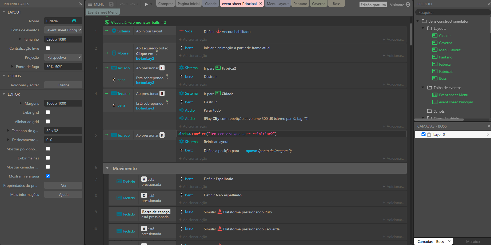
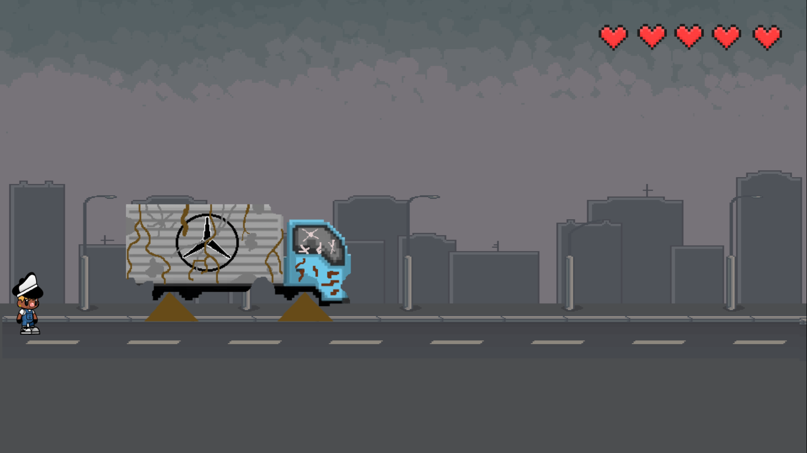
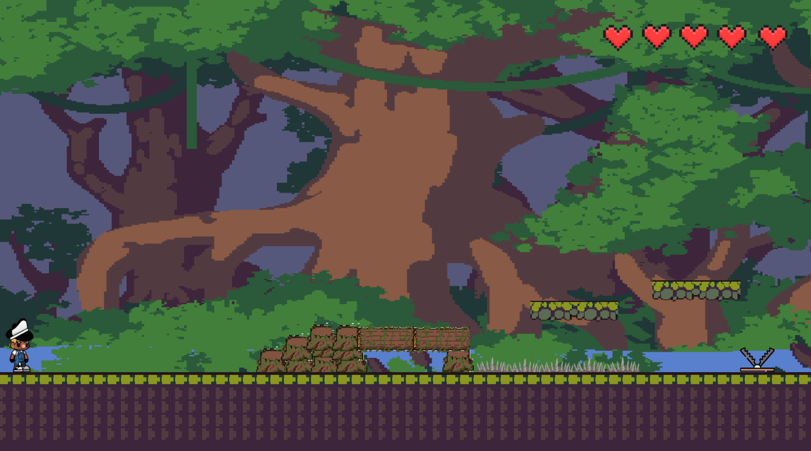
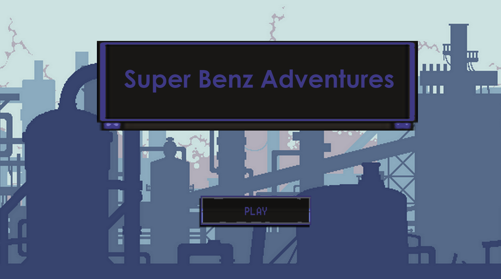
Projeto 2 - Aplicativo Multimídia
Um aplicativo que manipule mídia, ou seja, som, imagem, conjunto de textos. Foi usado a IDE chamada Processing e a linguagem de programação utilizada foi o Java. Nosso aplicativo lida com som e é nada mais que um player de musica em forma de playlist.
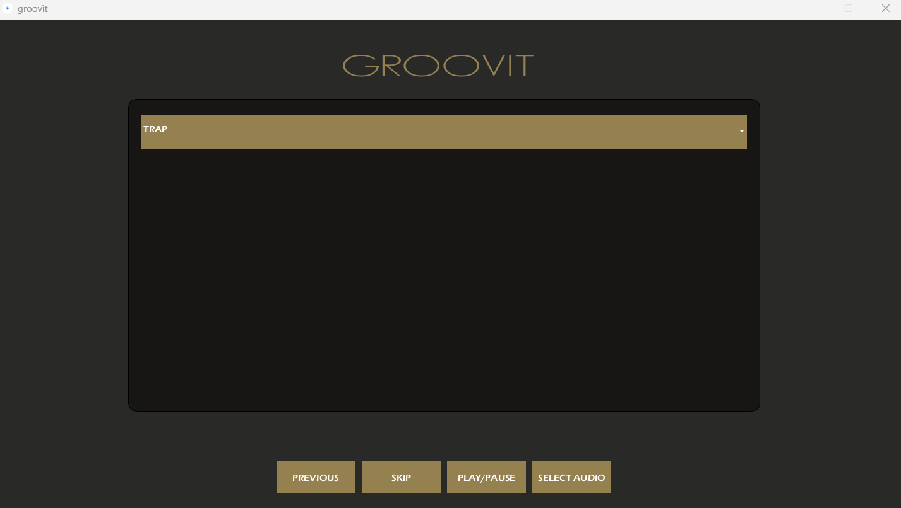
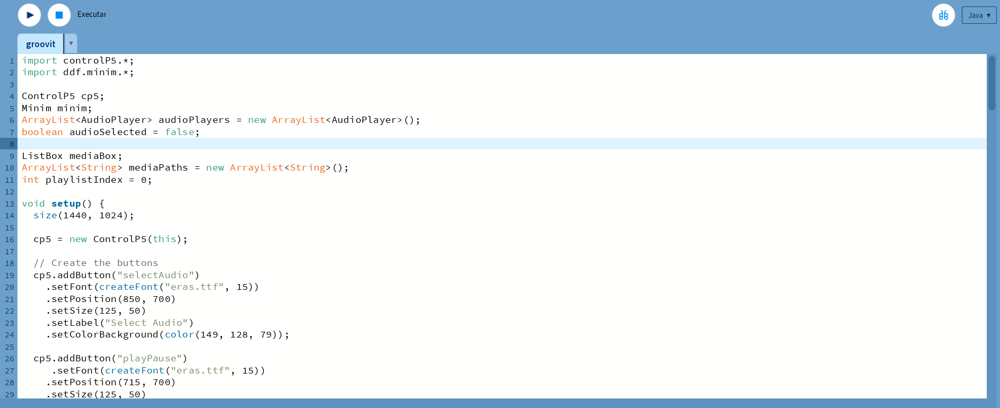
Projeto 3 - Aplicação Web
Criação de um site simples, para isso foi preciso entender a arquitetura cliente-servidor e linguagens como HTMLCSS e Javascript, o website tem o objetivo de melhorar o turismo de uma cidade do paraná de alguma forma.
Raciocínio Algorítmico
Raciocínio Algorítmico é uma disciplina fundamental na área de Ciência da Computação e engenharia de software. Ela envolve o estudo e a prática do desenvolvimento de algoritmos eficientes e da resolução de problemas computacionais de forma lógica e estruturada.Essa disciplina tem como objetivo fornecer aos estudantes uma compreensão sólida dos conceitos básicos relacionados à resolução de problemas por meio de algoritmos. Os algoritmos são sequências bem definidas de instruções ou passos que permitem a solução de um problema específico, desde cálculos matemáticos simples até tarefas complexas de processamento de dados.
Joquempo
jogo de joquempo feito em python, que é a linguagem utilizada nas aulas em sala, feito para ser jogado no terminal
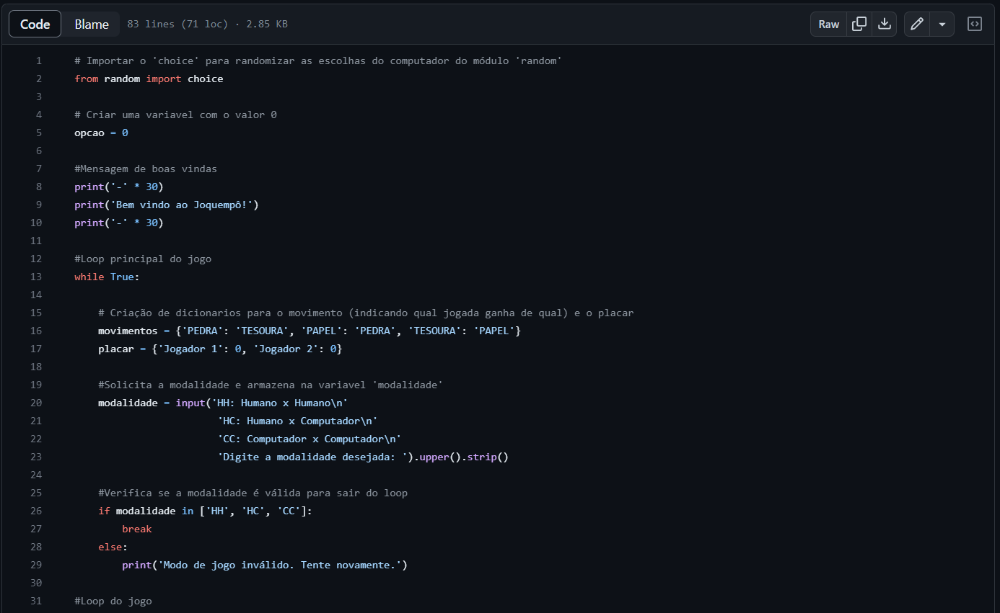
Batalha Naval
jogo batalha naval feito em python
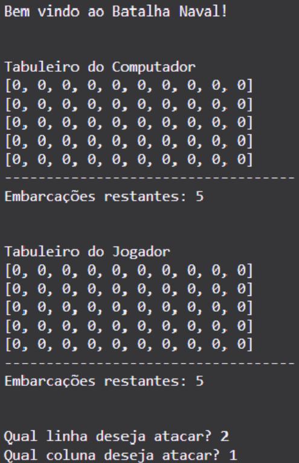
Resolução de Problemas com Lógica Matemática
A resolução de problemas com lógica matemática é uma disciplina fundamental que combina habilidades analíticas, raciocínio crítico e conhecimentos matemáticos para encontrar soluções eficientes e precisas para uma variedade de situações desafiadoras. Essa matéria tem como objetivo desenvolver a capacidade dos estudantes de abordar problemas complexos, decompondo-os em partes menores, identificando padrões, estabelecendo relações lógicas e aplicando estratégias adequadas para chegar a respostas corretas.
Atividade Manipulação Sintática
Atividade feita envolvendo manipulação sintática, um dos assuntos abordados em sala.
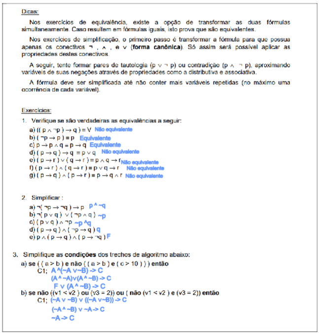
Fundamentos de Sistemas Ciberfísicos
A disciplina de Fundamentos de Sistemas Ciberfísicos abrange conceitos e técnicas essenciais para projetar, implementar e gerenciar esses sistemas complexos. Os tópicos abordados podem incluir arquiteturas de CPS, modelagem e simulação, comunicação e redes, segurança cibernética, algoritmos de controle, integração de hardware e software, entre outros.
Rega automática com ESP32
projeto feito com um simulador online que simula um ESP32, foi utilizado a linguagem C++ com bibliotecas.
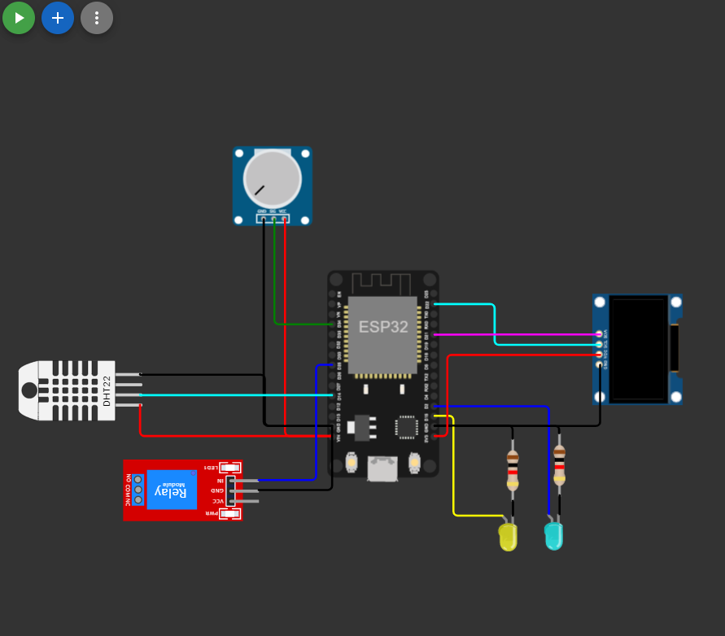
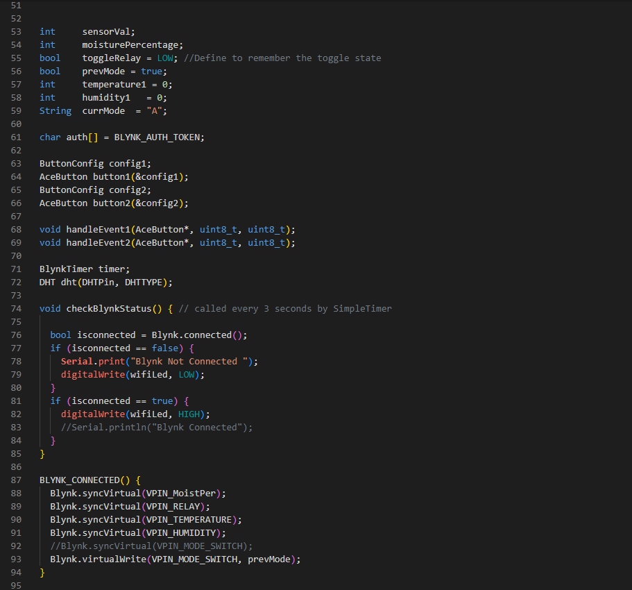
Filosofia
A disciplina de Filosofia é um campo de estudo que explora questões fundamentais sobre a natureza da existência, conhecimento, valores, ética, mente, razão e realidade. Através de uma abordagem crítica e reflexiva, a Filosofia busca compreender o mundo e a condição humana, levantando perguntas profundas e desafiadoras sobre diversos aspectos da vida.
Apresentação Hannah Arendt
Feita abordando o o texto de Hannah Arendt - A condição humana